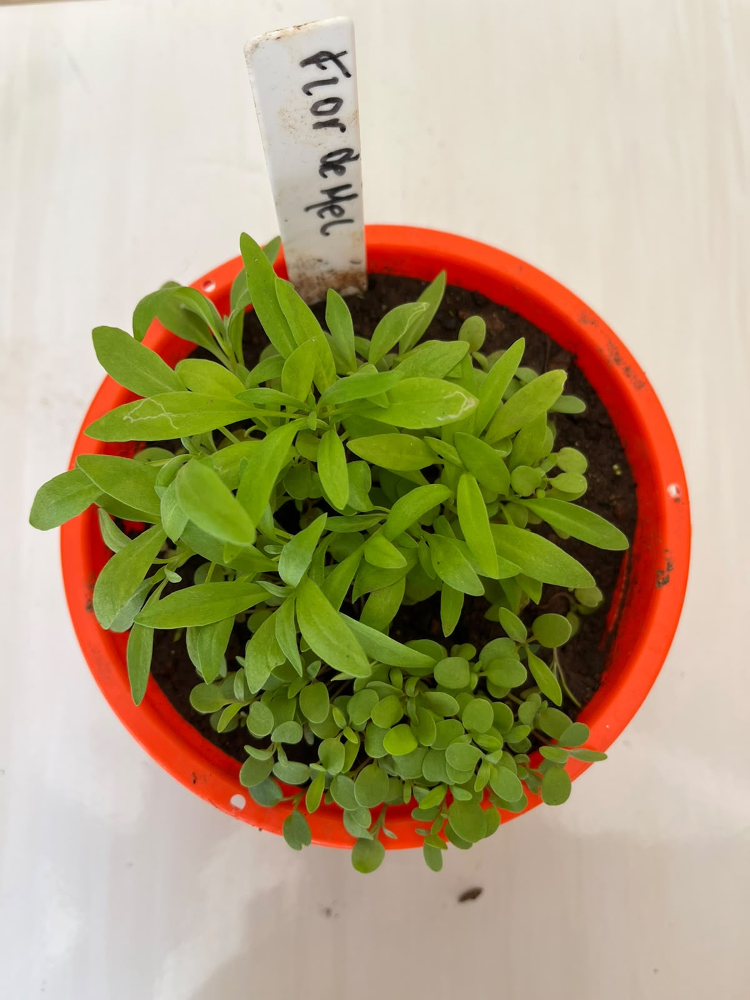

Jardim da Biodiversidade

Nome científico: Lobularia maritima
Família botânica: Brassicaceae
Origem: Região do Mediterrâneo
Vaso na Horta Escolar Viva: 🟠 Laranja
A Flor de Mel é uma planta ornamental delicada, conhecida pelo perfume agradável de suas pequenas flores e pela capacidade de formar belos tapetes floridos nos jardins.
Suas flores atraem diversos visitantes, sendo uma excelente escolha para jardins que valorizam a biodiversidade e a presença de polinizadores.
A Flor de Mel é uma planta de fácil cultivo e se adapta bem a jardins, vasos e espaços escolares, proporcionando beleza e perfume ao ambiente.
A Flor de Mel é muito importante para os polinizadores, pois suas pequenas flores atraem abelhas, borboletas e outros insetos benéficos.
Na Horta Escolar Viva, ela representa a importância das flores perfumadas na criação de ambientes mais vivos e sustentáveis.
A Flor de Mel recebeu esse nome popular devido ao seu perfume suave e agradável, que lembra a doçura do mel e encanta os jardins.
O QR Code desta planta será disponibilizado em breve.